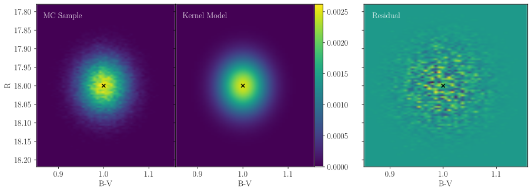

Kernels
One of the most important parts of our method is modelling the 2-D probability distribution of observing a star with particular intrinsic magnitudes in the Hess diagram space. We refer to these 2-D probability distributions as "kernels" throughout, as our process is conceptually similar to constructing a kernel density estimate. This document describes how these kernels are constructed and what assumptions are made to do so.
Our implementation is underpinned by the assumption that all kernels can be described the family of 2-D Gaussian probability distributions. To derive these 2-D distributions, we begin with 1-D distributions for each photometric filter used in the analysis.
We assume random photometric errors in the observed photometric catalog can be approximated as Gaussian. This is generally a good assumption for the space-based imaging used for resolved SFHs (e.g., HST and JWST) as long as the photometric completeness is high (greater than, perhaps, 50%). At low completeness, the error distributions become skewed and would be better modelled by something like a skew-normal distribution, which we do not presently consider.
We additionally require that the user can construct functions for each observed photomeric filter which, given a star's input intrinsic magnitude in a single filter $m_i$, return reliable measures for the average single-band photometric error; $\sigma(m_i)$. Assuming that the photometric errors in each band can be modelled as independent, we can derive, for a given $m_i$, the probability distribution of the observed magnitude $m_o$. We therefore have the 1-D probability distributions $P(m_o|m_i)$ for all filters.
In the case that imaging in three photometric filters are available and are used to construct a Hess diagram with a magnitude on the y-axis that does not appear on the x-axis (e.g., y=$R$ and x=$B-V$), then there is no covariance between the x and y axes and the 2-D Gaussian kernel is fully separable. We call this the "non-covariant" case.
In order to inject the kernel into the model Hess diagram, it must be integrated across the grid that defines the discretization. The integral of the non-covariant kernel across the Hess diagram pixel grid is entirely analytic, making evaluation easy and efficient. By integrating the kernel over the grid, the numerical precision is nearly independent of the grid resolution, which is not true of Monte Carlo (MC) based template construction algorithms.
In the case that imaging in only two photometric filters are available and are used to construct a Hess diagram with a magnitude on the y-axis that does appear on the x-axis (e.g., y=$B$ and x=$B-V$), then there is covariance between x and y axes. The initial implementation of this method neglected this covariance, and while the result was not catastrophic, it was certainly suboptimal. We now model the covariance explicitly. The covariance pattern does not permit a fully analytic integral as in the non-covariant case; instead, the inner integral (over, say, the x-axis) can be calculated analytically but the outer integral cannot. We therefore use Gauss-Legendre quadtrature to finish the integration over the second axis.
The types representing these kernels are not part of our public API, but we provide an example script examples/templates/kernels_example.jl which illustrates the performance of these kernels. The output of this script is reproduced and explained below.
Consider a star taken from an isochrone with intrinsic magnitudes $B=20$, $V=19$, and $R=18$ with expected random photometric errors $\sigma_B=0.02$, $\sigma_V=0.03$, and $\sigma_R=0.05$. Our example randomly samples a large population of possible observed magnitudes given these intrinsic properties and compares the distribution of the MC sample to our kernels.
We consider first the non-covariant case:

which has the expected, non-rotated morphology.
We next consider the covariant case with the covariance pattern y=$B$ and x=$B-V$:
which we can see correctly models the covariance pattern.
And finally, the covariant case with the covariance pattern y=$V$ and x=$B-V$: